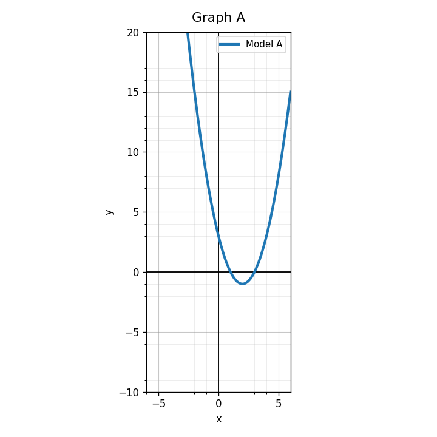

Decide whether $y=3x^2-2x+1$ is linear or quadratic. Explain how you know.
Complete the table for $y=x^2-2x-8$.
| $x$ | -3 | -2 | -1 | 0 | 1 | 2 | 3 | 4 | 5 |
|---|---|---|---|---|---|---|---|---|---|
| $y$ |
Use your table from the previous problem to identify any $x$-intercepts that appear.
Use Graph A to describe whether the graph has a maximum or a minimum.

Explain one difference between product form and expanded form for a quadratic expression.
Match each equation to line or parabola.
A student says the constant term in $y=x^2-6x+5$ has no graph meaning. Critique the statement.
Create a quadratic equation and name one graph feature someone could identify from a table or graph.